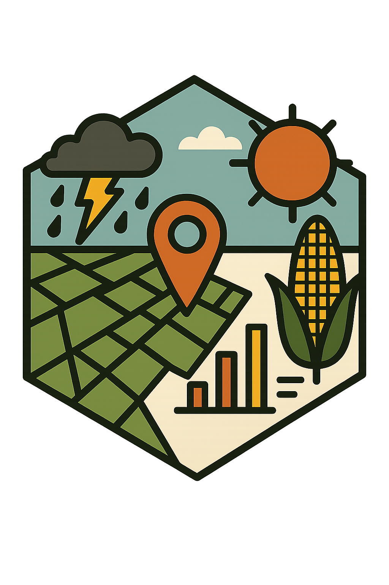

How unusual a window was, against the same window in earlier years
Source:R/calc_anomaly.R
calc_anomaly.RdTakes the output of summarise_by_interview() run with lags and compares
lag 0 — the window before the interview — with the same window at the same
location in the baseline years: the primary season's rainfall against past
primary seasons, not against the year-round average.
Usage
calc_anomaly(
x,
cols = NULL,
baseline = NULL,
forms = c("pctl", "z"),
min_years = 10,
id = NULL,
label = NULL
)Arguments
- x
A summary table from
summarise_by_interview(), run with lags — seewindow_lags(). It must holdlagand the window bounds, which that function returns.- cols
<
tidy-select> The columns to take anomalies of; by default every summary column ofx.- baseline
The years the baseline is drawn from, as two numbers (
c(1981, 2020)) or two dates, matched on the year each window ends in. By default every lag other than 0, however far back the window reached.- forms
"pctl","z", or both.- min_years
The fewest baseline windows an anomaly may be built on; a unit with fewer gets
NArather than a number resting on a handful of years.- id
Optional name of the unit identifier column.
- label
Optional name shown in progress messages.
Value
A c4e_tbl with one row per survey unit: the identifier,
baseline_n (how many baseline windows it was built on) and one column
per input column and form, pre_total_pctl and pre_total_z for
pre_total.
Details
Two forms, both returned by default:
"pctl": the share of baseline windows at or below this one, 0 to 100. It assumes no distribution, which matters because season totals are right-skewed: a threshold of z < −1 catches far fewer dry seasons than a normal distribution implies, and under-detects them worst in the driest places. A percentile also means the same thing in two countries, where a z-score does not."z": the window's distance from the baseline mean in baseline standard deviations. Retained because the literature reports rainfall z-scores.
Within one location the percentile is a monotone transform of the z-score, so with location fixed effects the two rank units identically and differ only in shape. The gain from the percentile appears when pooling across locations.
For a fitted-distribution version of the same idea on monthly data, see
calc_std_index(), which is SPI and SPEI.
See also
summarise_by_interview(), window_lags(), calc_std_index()
Other indicators:
bound_threshold(),
calc_condition(),
calc_heatwave(),
calc_par(),
calc_percentile(),
calc_percentile_day(),
calc_spell(),
calc_spell_excess(),
calc_spell_percentile(),
calc_std_index(),
calc_std_threshold(),
calc_threshold_day()
Examples
tmax <- read_climate(system.file("extdata", "tmax_daily.tif", package = "c4e"))
#> Read tmax_daily: tmax [K], daily, 2021-01-01 to 2023-12-31, 1095 layers
#> (synthetic).
survey <- read.csv(system.file("extdata", "survey.csv", package = "c4e"))
survey$interview <- as.Date(survey$interview)
coord <- prepare_coord(survey, lat, lon, id = hhid, interview = interview)
hot <- extract_by_coord(tmax, georef_coord(coord)) |>
convert_unit("C") |>
calc_threshold_day(above = 30)
#> Taking the coordinates as longitude and latitude in "EPSG:4326"; give `crs`
#> otherwise.
#> Using `from = "K"` from upstream unit.
#> Using `unit = "C"` from upstream unit.
summarise_by_interview(coord, hot, window = window_lags(window_lag("1 year"), 0:2)) |>
calc_anomaly(min_years = 2)
#> Warning: 20 of 60 household windows are `NA`: less than 80% of the days have data.
#> ℹ 0 of them have no data at all (a location on cells without data, or a window
#> outside the dates of the data).
#> ℹ Lower `min_coverage` to keep partial windows, e.g. `min_coverage = 0.5`.
#> # A tibble: 20 × 6
#> # Context: tmax [C], day, summary; key hhid; 4 indicators
#> hhid baseline_n day_abv_30_sum_pctl day_abv_30_sum_z C_abv_30_sum_pctl
#> <chr> <int> <dbl> <dbl> <dbl>
#> 1 HH01 2 NA NA NA
#> 2 HH02 2 NA NA NA
#> 3 HH03 2 NA NA NA
#> 4 HH04 2 NA NA NA
#> 5 HH05 2 NA NA NA
#> 6 HH06 2 NA NA NA
#> 7 HH07 2 NA NA NA
#> 8 HH08 2 NA NA NA
#> 9 HH09 2 NA NA NA
#> 10 HH10 2 NA NA NA
#> 11 HH11 2 NA NA NA
#> 12 HH12 2 NA NA NA
#> 13 HH13 2 NA NA NA
#> 14 HH14 2 NA NA NA
#> 15 HH15 2 NA NA NA
#> 16 HH16 2 NA NA NA
#> 17 HH17 2 NA NA NA
#> 18 HH18 2 NA NA NA
#> 19 HH19 2 NA NA NA
#> 20 HH20 2 NA NA NA
#> # ℹ 1 more variable: C_abv_30_sum_z <dbl>